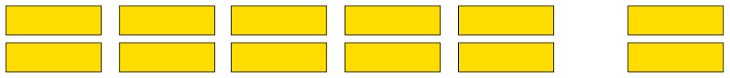

Whole numbers
In this chapter you will engage with different kinds of numbers that are used for counting, measuring, solving equations and many other purposes.
Properties of numbers
Different types of numbers
The natural numbers
The numbers that we use to count are called natural numbers:
\(1 \quad 2 \quad 3 \quad 4 \quad 5 \quad 6 \quad 7 \quad 8 \quad 9 \quad 10 \quad 11 \quad 12 \quad 13 \quad 14\)
Natural numbers have the following properties:
When you add two or more natural numbers, you get a natural number again.
When you multiply two or more natural numbers, you get a natural number again.
Mathematicians describe this by saying: The system of natural numbers is closed under addition and multiplication.
However, when a natural number is subtracted from another natural number the answer is not always a natural number again. For example, there is no natural number that provides the answer to \(5 - 20\).
Similarly, when a natural number is divided by another natural number the answer is not always a natural number again. For example, there is no natural number that provides the answer to \(10 \div 3\).
When subtraction or division is done with natural numbers, the answers are not always natural numbers.
The system of natural numbers is not closed under subtraction or division.
-
Is there a smallest natural number, that means a natural number that is smaller than all other natural numbers? If so, what is it?
Is there a largest natural number, in other words, a natural number that is larger than all other natural numbers? If so, what is it?
-
In each of the following cases, say whether the answer is a natural number or not.
- \(100 + 400\)
- \(100 - 400\)
- \(100 \times 400\)
- \(100 \div 400\)
- \(100 + 400\)
The whole numbers
Although we don't use 0 for counting, we need it to write numbers. Without 0, we would need a special symbol for 10, all multiples of 10 and some other numbers. For example, all the numbers that belong in the yellow cells below would need a special symbol.
|
41 |
42 |
43 |
44 |
45 |
46 |
47 |
48 |
49 |
|
|
51 |
52 |
53 |
54 |
55 |
56 |
57 |
58 |
59 |
|
|
61 |
62 |
63 |
64 |
65 |
66 |
67 |
68 |
69 |
|
|
71 |
72 |
73 |
74 |
75 |
76 |
77 |
78 |
79 |
|
|
81 |
82 |
83 |
84 |
85 |
86 |
87 |
88 |
89 |
|
|
91 |
92 |
93 |
94 |
95 |
96 |
97 |
98 |
99 |
|
|
111 |
112 |
113 |
114 |
115 |
116 |
117 |
118 |
119 |
The natural numbers combined with 0 is called the system of whole numbers.
If you are working with natural numbers and you add two numbers, the cd will always be different from any of the two numbers added. For example: \(21 + 25 = 46\) and \(24 + 1 = 25\). If you are working with whole numbers, in other words including 0, this is not the case. When 0 is added to a number the answer is just the number you start with: \(24 + 0 = 24\).
For this reason, 0 is called the identity element for addition. In the set of natural numbers there is no identity element for addition.
Is there an identity element for multiplication in the whole numbers? Explain your answer.
-
What is the smallest natural number?
What is the smallest whole number?
The integers
In the set of whole numbers, no answer is available when you subtract a number from a number smaller than itself. For example there is no whole number that is the answer for \(5 - 8\). But there is an answer to this subtraction in the system of integers.
\(5 - 8 = -3\). The number \(-3\) is read as "negative 3" or "minus 3".
The whole numbers start with 0 and extend in one direction:
\[0 \quad 1 \quad 2 \quad 3 \quad 4 \quad 5 \quad 6 \quad \rightarrow \quad \rightarrow \quad \rightarrow \quad ......\]The integers extend in both directions:
\[...... \quad \leftarrow \quad \leftarrow \quad \leftarrow \quad -5 \quad -4 \quad -3 \quad -2 \quad -1 \quad 0 \quad 1 \quad 2 \quad 3 \quad 4 \quad 5 \quad 6 \quad \rightarrow \quad \rightarrow \quad \rightarrow \quad ......\]All whole numbers are also integers. The set of whole numbers forms part of the set of integers. For each whole number, there is a negative number that corresponds with it. The negative number -5 corresponds to the whole number 5 and the negative number -120 corresponds to the whole number 120.
Within the set of integers, the sum of two numbers can be 0.
For example \(20 + (-20) = 0 \) and \(135 + (-135) = 0\).
20 and -20 are called additive inverses of each other.
Calculate the following without using a calculator.
- \(100-165\)
- \(300-700\)
- \(100-165\)
You may use a calculator to calculate the following:
- \(123-765\)
- \(385-723\)
- \(123-765\)
The rational numbers

Five people share 12 slabs of chocolate equally among them.
Will each person get more or less than two full slabs of chocolate?
Can each person get another half of a slab?

How much more than two full slabs can each person get, if the two remaining slabs are divided as shown here?
Will each person get \(2\), \(4\) or 2\(\frac{2}{5}\) slab?
The system of integers does not provide an answer for all possible division questions. For example, as we see above, the answer for 12 \(\div\) 5 is not an integer.
To have answers for all possible division questions, we have to extend the number system to include fractions and negative fractions, in other words, numbers of the form \(\frac{\text{integer}}{\text{integer}}\). This system of numbers is called the rational numbers. We can represent rational numbers as common fractions or as decimal numbers.
Express the answers for each of the following division problems in two ways: using the common fraction notation and using the decimal notation for fractions.
- \(23 \div 10\)
- \(23 \div 5\)
- \(230 \div 100\)
- \(8 \div 10\)
- \(23 \div 10\)
Answer the statement by writing 'yes' or 'no' in the appropriate cell.
Statement
Natural numbers
Whole numbers
Integers
Rational numbers
The sum of two numbers is a number of the same kind (closed under addition).
The sum of two numbers is always bigger than either of the two numbers.
When one number is subtracted from another, the answer is a number of the same kind (closed under subtraction).
When one number is subtracted from another, the answer is always smaller than the first number.
The product of two numbers is a number of the same kind (closed under addition).
The product of two numbers is always bigger than either of the two numbers.
The quotient of two numbers is a number of the same kind (closed under division).
The quotient of two numbers is always smaller than the first of the two numbers.
Irrational numbers
Rational numbers do not provide for all situations that may occur in mathematics. For example, there is no rational number which will produce the answer 2 when it is multiplied by itself.
\((\text{number}) \times (\text{same number}) = 2\)\(2 \times 2 = 4\) and \(1 \times 1 = 1\), so clearly, this number must be between 1 and 2.
But there is no number which can be expressed as a fraction, in either the common fraction or the decimal notation, which will solve this problem. Numbers like these are called irrational numbers.
Here are some more examples of irrational numbers:
\[\sqrt{5} \quad \sqrt{10} \quad \sqrt{3} \quad \sqrt{7} \quad \pi \]The rational and the irrational numbers together are called the real numbers.
Calculations with whole numbers
Do not use a calculator at all in Section 1.2.
Estimating, rounding off and compensating
-
A shop owner wants to buy chickens from a farmer. The farmer wants R38 for each chicken. Answer the following questions without doing written calculations.
If the shop owner has R10 000 to buy chickens, do you think he can buy more than 500 chickens?
Do you think he can buy more than 200 chickens?
Do you think he can buy more than 250 chickens?
What you were trying to do in question 1 is called estimation. To estimate, when working with numbers, means to try to get close to an answer without actually doing the calculations. However, you can do other, simpler calculations to estimate.
When the goal is not to get an accurate answer, numbers may be rounded off. For example, the cost of 51 chickens at R38 each may be approximated by calculating \(50 \times 40\). This is clearly much easier than calculating \(51 \times \text{R }38\).
To approximate something means to try to find out more or less how much it is, without measuring or calculating it precisely.
- How much is \(5 \times 4\)?
- How much is \(5 \times 40\)?
- How much is \(50 \times 40\)?
- How much is \(5 \times 4\)?
The cost of 51 chickens at R38 each is approximately R2 000.
This approximation was obtained by rounding both 51 and 38 off to the nearest multiple of 10, and then calculating with the multiples of 10.
In each case, estimate the cost by rounding off to calculate the approximate cost, without using a calculator. In each case make two estimates. First make a rough estimate by rounding the numbers off to the nearest 100 before calculating. Then make a better estimate by rounding the numbers off to the nearest 10 before calculating.
83 goats are sold for R243 each.
121 chairs are sold for R258 each.
R5 673 is added to R3 277.
R874 is subtracted from R1 234.
Suppose you have to calculate \(\text{R }823 - \text{R }273\).
An estimate can be made by rounding the numbers off to the nearest 100:
\(\text{R }800 - \text{R }300 = \text{R }500\).
By working with R800 instead of R823, an error was introduced into your answer. How can this error be corrected: by adding R23 to the R500, or by subtracting it from R500?
Correct the error to get a better estimate.
Now also correct the error that was made by subtracting R300 instead of R273.
What you did in question 4 is called compensating for errors.
Estimate each of the following by rounding off the numbers to the nearest 100.
- \(812 - 342\)
- \(2 342 - 1 876\)
- \(812 + 342\)
- \(2 342 + 1 876\)
- \(9 + 278\)
- \(3 231 - 1 769\)
- \(8 234 - 2 776\)
- \(5 213 - 3 768\)
- \(812 - 342\)
Find the exact answer for each of the calculations in question 5, by working out the errors caused by rounding, and compensating for them.
Adding in columns
-
Write \(8 000 + 1 100 + 130 + 14\) as a single number:
Write \(3 000 + 700 + 50 + 8\) as a single number:
Write \(5 486\) in expanded notation, as shown in 1(b).
You can calculate \(3 758 + 5 486\) as shown on the left below.
|
3 758 |
You can do this in short, as shown on the right. This is a bit harder on the brain, but it saves paper! |
3 758 |
|
|
5 486 |
5 486 |
||
|
Step 1 |
8 000 |
9 244 |
|
|
Step 2 |
1 100 |
||
|
Step 3 |
130 |
||
|
Step 4 |
14 |
||
|
9 244 |
Explain how the numbers in each of steps 1 to 4 are obtained.
It is only possible to use the shorter method if you add the units first, then add the tens, then the hundreds and finally, the thousands. You can then do what you did in question 1(a), without writing the separate terms of the expanded form.
Calculate each of the following without using a calculator.
- \(3 878 + 3 784\)
- \(298 + 8 594\)
- \(10 921 + 2 472\)
- \(1 298 + 18 782\)
- \(3 878 + 3 784\)
A farmer buys a truck for R645 840, a tractor for R783 356, a plough for R83 999 and a bakkie for R435 690.
Estimate to the nearest R100 000 how much these items will cost altogether.
Use a calculator to calculate the total cost.
An investor makes R543 682 in one day on the stock market and then loses R264 359 on the same day.
Estimate to the nearest R100 000 how much money she has made in total on that day.
Use a calculator to determine how much money she has made.
Multiplying in columns
-
- Write 3 489 in expanded
notation:
- Write an expression
without brackets that is equivalent to \(7 \times (3 000 + 400 + 80 + 9)\):
\(7 \times 3 489\) may be calculated as shown on the left below.
3 489
A shorter method is shown on the right.
3 489
\(\times 7\)
\(\times 7\)
Step 1
63
24 423
Step 2
560
Step 3
2 800
Step 4
21 000
24 423
- Write 3 489 in expanded
notation:
Explain how the numbers in each of steps 1 to 4 on the above left are obtained.
\(47 \times 3 489\) may be calculated as shown on the left below.
3 489
A shorter method is shown on the right.
3 489
\(\times 47\)
\(\times 47\)
Step 1
63
24 423
Step 2
560
139 560
Step 3
2 800
163 983
Step 4
21 000
Step 5
360
Step 6
3 200
Step 7
16 000
Step 8
120 000
163 983
-
Explain how the numbers in
each of steps 5 to 8 on the above left are obtained.
-
Explain how the number
139 560 that appears in the shorter form on the above right is
obtained.
Subtracting in columns
-
Write each of the following as
a single number.
- \(8 000 + 400 + 30 + 2\)
- \(7 000 + 1 300 + 120 +12\)
- \(3000 + 900 + 50 + 7\)
- \(8 000 + 400 + 30 + 2\)
If you worked correctly you should have obtained the same answers for questions 1(a) and 1(b). If this was not the case, redo your work.
The expression \(7 000 + 1 300 + 120 + 12\) was formed from \(8 000 + 400 + 30 + 2\) by
- taking 1 000 away from 8 000 and adding it to the hundreds term to get 1 400,
- taking 100 away from 1 400 and adding it to the tens term to get 130, and
- taking 10 away from 130 and adding it to the units term to get 12.
-
Form an expression like the expression in 1(b) for each of the following:
- \(8 000 + 200 + 100 + 4\)
- \(3 000 + 400 + 30 + 1\)
- \(8 000 + 200 + 100 + 4\)
-
Write expressions like in question 1(b) for the numbers below.
- \(7 214\)
- \(8 103\)
\(8 432 - 3 957\) can be calculated as shown below.
8432
-3957
Step 1
5
Step 2
70
Step 3
400
Step 4
4000
Step 5
4475
To do the subtraction in each column, you need to think of \(8 432\) as \(8 000 + 400 + 30 + 2\), in fact you have to think of it as \(7 000 + 1 300 + 120 + 12\).
In step 1, the 7 of 3 957 is subtracted from 12.
- \(7 214\)
-
- How is the 70 in step 2 obtained?
- How is the 400 in step 3 obtained?
- How is the 4 000 in step 4 obtained?
- How is the 4 475 in step 5 obtained?
Because of the zeros obtained in steps 2, 3 and 4, the answers need not be written separately as shown above. The work can actually be shown in the short way below.
8432
-3957
4475
- How is the 70 in step 2 obtained?
-
Calculate each of the following without using a calculator.
- \(9 123 - 3 784\)
- \(8 284 - 3 547\)
- \(9 123 - 3 784\)
Use a calculator to check your answers. If your answers are wrong, try again.
Calculate each of the following without using a calculator.
- \(7 243 - 3 182 \)
- \(6 221 - 1 888\)
You may use a calculator to do the questions below.
Bettina has R87 456 in her savings account. She withdraws R44 800 to buy a car. How much money is left in her savings account?
-
Liesbet starts a savings account by making a deposit of R40 000. Over a period of time she does the following transactions on the savings account:
a withdrawal of R4 000
a withdrawal of R2 780
a deposit of R1 200
a deposit of R7 550
a withdrawal of R5 230
a deposit of R8 990
a deposit of R1 234
How much money does she have in her savings account now?
-
- \(\text{R }34 537 - \text{R }13 267\)
- \(\text{R }135 349 - \text{R }78 239\)
- \(\text{R }34 537 - \text{R }13 267\)
Long division
Study this method for calculating \(13 254 \div 56\):
|
13 254 |
||
|
\(\textbf{200} \times 56 = 11 200\) |
11 200 |
(200 is a rough estimate of the answer for \(13 254 \div 56\)) |
|
2 054 |
(2 054 remains after 11 200 is taken from 13 254) |
|
|
\(\textbf{30} \times 56 = 1 680\) |
1 680 |
(30 is a rough estimate of the answer for 2 054 \(\div\) 56) |
|
374 |
(374 remains after 1 680 is taken from 2 054) |
|
|
6 \(\times\) 56 = 336 |
336 |
(6 is an estimate of the answer for 374 \(\div\) 56) |
|
236 \(\times\) 56 = 13 216 |
38 |
(38 remains) |
So \(13 254 \div 56 = 236\) remainder 38, or \(13 254 \div 56 = 236 \frac{38}{56} = 236\frac{19}{28} \), which can also be written as 236,68 (correct to two decimal figures).
The work can also be set out as follows:
|
6 |
||||
|
30 |
||||
|
200 |
236 |
|||
|
56 |
13 254 |
or more briefly as |
56 |
13 254 |
|
11 200 |
11 200 |
|||
|
2 054 |
2 054 |
|||
|
1 680 |
1 680 |
|||
|
374 |
374 |
|||
|
336 |
336 |
|||
|
38 |
38 |
-
-
Mlungisi's work to do a certain calculation is shown on the right. What is the question that Mlungisi tries to answer?
463
78
36 177
Step 1
31 200
Step 2
4 977
Step 3
4 680
Step 4
297
Step 5
234
63
Where does the number 31 200 in step 1 come from? How did Mlungisi obtain it, and for what purpose did he calculate it?
Explain step 2 in the same way as you explained step 1.
Explain step 3.
-
Calculate each of the following without using a calculator.
-
\(33 030 \div 63\)
-
\(18 450 \div 27\)
-
-
Use a calculator to check your answers to question 2. If your answers are wrong, try again. It is important that you learn to do long division correctly.
-
Calculate each of the following without using a calculator.
\( 76 287 \div 287\)
\( 65 309 \div 44\)
Use your calculator to do questions 5 and 6 below. A municipality has budgeted R85 000 for putting up new street name boards. The street name boards cost R72 each. How many new street name boards can be put up, and how much money will be left in the budget?
-
A furniture dealer quoted R840 000 for supplying 3 450 school desks. A school supply company quoted R760 000 for supplying 2 250 of the same desks. Which provider is cheapest, and what do the two providers actually charge for one school desk?
Multiples and factors
Lowest common multiples and prime factorisation
-
Consecutive multiples of 6, starting at 6 itself, are shown in the table below.
6
12
18
24
30
36
42
48
54
60
66
72
78
84
90
96
102
108
114
120
126
132
138
144
150
156
162
168
174
180
186
192
198
204
210
216
222
228
234
240
-
The table below also shows multiples of a number. What is the number?
15
30
45
60
75
90
105
120
135
150
165
180
195
210
225
240
255
270
285
300
315
330
345
360
375
390
405
420
435
450
465
480
495
510
525
540
555
570
585
600
-
Draw rough circles around all the numbers that occur in both the above tables.
-
What is the smallest number that occurs in both tables?
-
90 is a multiple of 6, it is also a multiple of 15.
90 is called a common multiple of 6 and 15, it is a multiple of both.
The smallest number that is a multiple of both 6 and 15 is the number 30.
30 is called the lowest common multiple or LCM of 6 and 15.
-
Calculate, without using a calculator.
-
\(2 \times 3 \times 5 \times 7 \times 11\)
-
\(2 \times 2 \times 5 \times 7 \times 13\)
-
\(2 \times 3 \times 3 \times 3 \times 5 \times 13\)
-
\(3 \times 5 \times 5 \times17\)
-
Check your answers by using a calculator or by comparing with some classmates.
2 is a factor of each of the numbers 2 310, 1 820 and 3 510.
Another way of saying this is: 2 is a common factor of 2 310, 1 820 and 3 510.
-
-
Is \(2 \times 3\), in other words, 6, a common factor of 2 310 and 3 510?
-
Is \(2 \times 3 \times 5\), in other words, 30, a common factor of 2 310 and 3 510?
-
Is there any bigger number than 30 that is a common factor of 2 310 and 3 510?
-
30 is called the highest common factor or HCF of 2 310 and 3 510.
In question 2 you can see the list of prime factors of the numbers 2 310, 1 820, 3 510 and 1 275.
The LCM of two numbers can be found by multiplying all the prime factors of both numbers, without repeating (except where a number is repeated as a factor in one of the numbers). The HCF of two numbers can be found by multiplying the factors that are common to the two numbers, i.e. in the list of prime factors of both numbers
-
In each case find the HCF and LCM of the numbers.
-
1 820 and 3 510
-
2 310 and 1 275
-
1 820 and 3 510 and 1 275
-
2 310 and 1 275 and 1 820
-
780 and 7 700
-
360 and 1 360
-
Solving problems about ratio, rate and proportion
Ratio and rate problems
You may use a calculator in this section.
-
Moeneba collects apples in the orchard. She picks about 5 apples each minute. Approximately how many apples will Moeneba pick in each of the following periods of time?
-
8 minutes
-
11 minutes
-
15 minutes
-
20 minutes
In the situation described in question 1, Moeneba picks apples at a rate of about 5 apples per minute.
-
-
Garth and Kate also collect apples in the orchard, but they both work faster than Moeneba. Garth collects at a rate of about 12 apples per minute, and Kate collects at a rate of about 15 apples per minute. Complete the following table to show approximately how many apples they will each collect in different periods of time.
Period of time in min
1
2
3
8
10
20
Moeneba
5
40
Garth
12
Kate
15
The three together
32
In this situation, the number of apples picked is directly proportional to the time taken.
If you filled the table in correctly, you will notice that during any period of time, Kate collected 3 times as many apples as Moeneba. We can say that during any time interval, the ratio between the numbers of apples collected by Moeneba and Kate is 3 to 1, which can be written as 3:1. For any period of time, the ratio between the numbers of apples collected by Garth and Moeneba is 12:5.
-
-
What is the ratio between the numbers of apples collected by Kate and Garth during a period of time?
-
Would it be correct to also say that the ratio between the numbers of apples collected by Kate and Garth is 5:4? Explain your answer.
-
-
To make biscuits of a certain kind, 5 parts of flour has to be mixed with 2 parts of oatmeal, and 1 part of cocoa powder. How much oatmeal and how much cocoa powder must be used if 500 g of flour is used?
-
A motorist covers a distance of 360 km in exactly 4 hours.
-
Approximately how far did the motorist drive in 1 hour?
-
Do you think the motorist covered exactly 90 km in each of the 4 hours? Explain your answer briefly.
-
Approximately how far will the motorist drive in 7 hours?
-
Approximately how long will the motorist need to travel 900 km?
-
Some people use these formulae to do calculations like those in question 5.
average speed = \(\dfrac{\textbf{distance}}{\textbf{time}}\) ,which here means distance \(\div \) time
distance = \({\textbf{average speed}} \times {\textbf{time}}\)
time = \(\dfrac{\textbf{distance}}{\textbf{average speed}}\), which here means distance \(\div \) average speed
-
For each of questions 5(c) and 5(d), state which formula will produce the correct answer.
-
A motorist completes a journey in three sections, making two long stops to eat and relax between sections. During section A he covers 440 km in 4 hours. During section B he covers 540 km in 6 hours. During section C he covers 280 km in 4 hours.
-
Calculate his average speed over each of the three sections.
-
Calculate his average speed for the journey as a whole.
-
On the next day, the motorist has to travel 874 km. How much time (stops excluded) will he need to do this? Justify your answer with calculations.
-
-
Different vehicles travel at different average speeds. A large transport truck with a heavy load travels much slower than a passenger car. A small bakkie is also slower than a passenger car. In the following table, some average speeds and the times needed are given for different vehicles that all have to be driven for the same distance of 720 km. Complete the table.
Time in hours
12
9
8
6
5
Average speed in km/h
60
-
Look at the table you have just completed.
-
What happens to the time needed if the average speed increases?
-
What happens to the average speed if the time is reduced?
-
What can you say about the product average speed \(\times\) time, for the numbers in the table?
-
In the situation above, the average speed is said to be indirectly proportional to the time needed for the journey.
Solving problems in financial contexts
You may use a calculator in Section 1.5.
Discount, profit and loss
-
-
R12 800 is divided equally between 100 people.
How much money does each person get?
-
How much money do eight of the people together get?
-
Another word for hundredths is percent.
Instead of \(\frac{5}{100}\) we can write 5%. The symbol % means exactly the same as \(\frac{}{100}\) .
In question 1(a) you calculated \(\frac{1}{100}\) or 1% of R12 800, and in question 1(b) you calculated \(\frac{8}{100}\) or 8% of R12 800.
The amount that a dealer pays for an article is called the cost price. The price marked on the article is called the marked price and the price of the article after discount is the selling price.
-
The marked prices of some articles are given below. A discount of 15% is offered to customers who pay cash. In each case calculate how much a customer who pays cash will actually pay.
-
R850
-
R140
-
R32 600
-
R138
-
Lina bought a couch at a sale. It was marked R3 500 but she paid only R2 800.
She was given a discount of R700.
What percentage discount was given to Lina?
This question means:
How many hundredths of the marked price were taken off?
To answer the question we need to know how much \(\frac{1}{100}\) (one hundredth) of the marked price is.
-
-
How much is \(\frac{1}{100}\) of R3 500?
-
How many hundredths of R3 500 is the same as R700?
-
What percentage discount was given to Lisa: 10% or 20%?
-
-
The cost price, marked price and selling price of some articles are listed below.
Article A: Cost price = R240, marked price = R360, selling price = R324.
Article B: Cost price = R540, marked price = R700, selling price = R560.
Article C: Cost price = R1 200, marked price = R2 000, selling price = R1 700.
The profit is the difference between the cost price and the selling price.
For each of the above articles, calculate the percentage discount and profit.
-
Remey decided to work from home and bought herself a sewing machine for R750. She planned to make 40 covers for scatter cushions. The fabric and other items she needed cost her R3 600. Remey planned to sell the covers at R150 each.
-
How much profit could Remey make if she sold all 40 covers at this price?
-
Remey managed to sell only 25 of the covers and decided to sell the rest at R100 each. Calculate her percentage profit.
-
-
Zadie bakes and sells pies to earn some extra income. The cost of the ingredients for her chicken pies came to about R68. She sold the pies for R60. Did she make a profit or a loss? Calculate the percentage loss or profit.
Hire purchase
Sometimes you need an item but do not have enough money to pay the full amount immediately. One option is to buy the item on hire purchase (HP). You will have to pay a deposit and sign an agreement in which you undertake to pay monthly instalments until you have paid the full amount. Therefore:
HP price = deposit + total of instalments
The difference between the HP price and the cash price is the interest that the dealer charges you for allowing you to pay off the item over a period of time.
-
Sara buys a flat screen television on hire purchase. The cash
price is R4 199. She has to pay a deposit of R950 and 12
monthly instalments of R360.
- Calculate the total HP price.
- How much interest does she pay?
- Calculate the total HP price.
-
Susie buys a car on hire purchase. The car costs R130 000. She pays a 10% deposit on the cash price and will have to pay monthly instalments of R4 600 for a period of three years. David buys the same car, but chooses another option where he has to pay a 35% deposit on the cash price and monthly instalments of R3 950 for two years.
-
Calculate the HP price for both options.
-
Calculate the difference between the total price paid by Susie and by David.
-
Calculate the interest that Susie and David have to pay as a percentage of the cash price.
-
Simple interest
When interest is calculated for a number of years on an amount (i.e. a fixed deposit) without the interest being added to the amount each year for the purpose of later interest calculations, it is referred to as simple interest. If the amount is invested for part of a year, the time must be written as a fraction of a year.
-
Interest rates are normally expressed as percentages. This makes it easier to compare rates. Express each of the following as a percentage:
-
A rate of R5 for every R100
-
A rate of R7,50 for every R50
-
A rate of R20 for every R200
-
A rate of x rands for every a rands
-
-
Annie deposits R8 345 into a savings account at Bonus Bank. The interest rate is 9% per annum.
Per annum means "per year".
-
How much interest will she have earned at the end of the first year?
-
Annie decides to leave the deposit of R8 345 with the bank for an indefinite period, and to withdraw only the interest at the end of every year. How much interest does she receive over a period of five years?
-
-
Maxi invested R3 500 at an interest rate of 5% per annum. Her total interest was R875. For what period did she invest the amount?
-
Money is invested for 1 year at an interest rate of 8% per annum. Complete the table of equivalent rates.
Sum invested (R)
1 000
2 500
8 000
20 000
90 000
x
Interest earned (R)
-
Interest on overdue accounts is charged at a rate of 20% per annum. Calculate the interest due on an account that is 10 days overdue if the amount owing is R260. (Give your answer to the nearest cent.)
-
A sum of money invested in the bank at 5% per annum, simple interest, amounted to R6 250 after 5 years. This final amount includes the interest. Thuli figured out that the final amount is (1 + 0,05 \(\times\) 5 ) \(\times\) amount invested.
-
Explain Thuli's thinking.
-
Calculate the amount that was invested.
-
Compound interest
When the interest earned each year is added to the original amount, and the interest for the following year is calculated on this new amount, the result is known as compound interest.
Example:
R2 000 is invested at 10% per annum compound interest:
End of 1st year: Amount = R2 000 + R200 interest = R2 200
End of 2nd year: Amount = R2 200 + R220 interest = R2 420
End of 3rd year: Amount = R2 420 + R242 interest = R2 662
-
An amount of R20 000 is invested at 5% per annum compound interest.
-
What is the total value of the investment after 1 year?
-
What is the total value of the investment after 2 years?
-
What is the total value of the investment after 3 years?
-
-
Bonus Bank is offering an investment scheme over two years at a compound interest rate of 15% per annum. Mr Pillay wishes to invest R800 in this way.
-
How much money will be due to him at the end of the two-year period?
-
How much interest will have been earned during the two years?
-
-
Andrew and Zinzi are arguing about interest on money that they have been given for Christmas. They each received R750. Andrew wants to invest his money in ABC Building Society for 2 years at a compound interest rate of 14% per annum, while Zinzi claims that she will do better at Bonus Bank, earning 15% simple interest per annum over 2 years. Who is correct?
-
Mr Martin invests R12 750 for 3 years compounded quarterly (i.e. four times a year) at 5,3%.
-
How many conversion periods will his investment have altogether?
-
How much is his investment worth after 3 years?
-
Calculate the total interest that he earns on his initial investment.
-
-
Calculate the interest generated by an investment (P) of R5 000 at 10% (r) compound interest over a period (n) of 3 years. A is the final amount. Use the formula \(A = P(1 + \frac{r}{100})^n\) to calculate the interest.
Exchange rate and commission
-
-
Tim bought £650 at the foreign exchange desk at Gatwick Airport in the UK at a rate of R15,66 per £1. The desk also charged 2,5% commission on the transaction. How much did Tim spend to buy the pounds?
-
What was the value of R1 in British pounds on that day?
-
-
Mandy wants to order a book from the internet. The price of the book is $25,86. What is the price of the book in rands? Take the exchange rate as R9,95 for $1.
-
Bongani is a car salesperson. He earns a commission of 3% on the sale of a car with the value of R220 000. Calculate how much commission he earned.